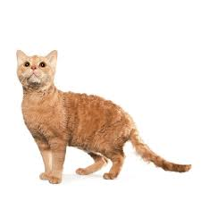

Gattini
German rex

Il German rex è una razza di gatto originaria della Germania ed affine nell'aspetto e nel carattere al Cornish rex.[1]
Storia
Secondo una storia contestata da alcuni esperti, il capostipide della razza, chiamato Kater Munk,
sarebbe nato nel 1930 o 1931 dall'incrocio tra un blu di Russia ed un Angora nelle vicinanze della città di Königsberg dell'allora
Prussia Orientale. Nel 1951 Rose Scheuer-Karpin trovò un esemplare dall'insolito pelo riccio, che ritenne il frutto di una mutazione
genetica e lo fece accoppiare col proprio gatto, scoprendo così che il gene responsabile della mutazione è recessivo. In seguito dagli a
ccoppiamenti dell'esemplare con i suoi stessi figli nacquero altri gatti col pelo riccio, che furono impiegati nelle successive selezioni.
Infine la razza venne esposta nelle mostre feline dagli anni 1960 e nel 1969 fu riconosciuta dalla CFA.[1]
Aspetto
Il pelo è corto, riccioluto, leggermente ispido e può assumere diversi colori.
È un gatto di media taglia (5 kg) e dalla testa triangolare con linee arrotondate. Ha zampe affusolate ed occhi tondi e ben distanziati.
Le orecchie sono ben distanziate, mediamente grandi e arrotondate in punta.[1]
Carattere
Il german rex è un gatto tendenzialmente equilibrato, paziente, intelligente, adatto all'addestramento e fedele al padrone.